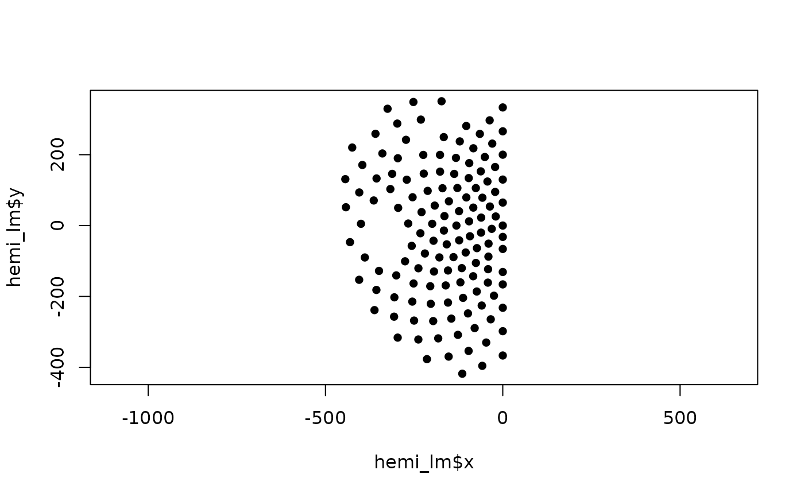

Choose region of interest
pick_region.RdThe function extracts the selected regions or hemisphere (or a combination of both) from the specified sensor coordinates.
Arguments
- coords
A data frame, matrix or named tibble with numeric columns of "x" and "y" sensor coordinates. If not defined, HCGSN256 template is used. See details for more information about coordinate requirements.
- hemisphere
A character vector denoting hemisphere to choose. Possible values:
"left","right","midline"or any combination of them. If not defined, both hemispheres with midline are chosen.- region
A character vector denoting region to choose. Possible values:
"frontal","central","parietal","occipital","temporal","face"or any combination of them. If not defined, all regions are chosen.- ROI
A character or factor vector with labels of regions, aligned row-wise with
coords. If not defined, the predefined vector (according to HCGSN256 template determined by an expert from Central European Institute of Technology, Masaryk University, Brno, Czech Republic) is used.- tol
A numeric value indicating tolerance for midline selection. (Values of x fulfilling abs(x) < tol are denoted as midline.) Default value is 1e-6.
Value
A tibble or data frame subset of coords filtered by the selected region and hemisphere criteria.
Details
If the coords input is data frame or matrix with no named columns, the first column is considered as "x" coordinate and second as "y" coordinate.
For the correct selection of the hemisphere with own coordinates, it is necessary that the 2D layout is oriented with the nose up and that the midline electrodes should have a zero x-coordinate (or approximately zero within tolerance). Otherwise, the results will not match reality.
Notes:
The option hemisphere = "left" (respectively hemisphere = "right") means only the left hemisphere without the midline. If you want to include midline as well, use hemisphere = c("left", "midline") (respectively hemisphere = c("right", "midline")).
The matching of region/hemisphere is exact and the function will stop with an the function stops with an error if no coordinates match the requested region and hemisphere combination.
Examples
# Choosing regions from HCGSN256 template
# a) temporal region in left hemisphere
pick_region(hemisphere = "left", region = "temporal")
#> # A tibble: 19 × 3
#> x y sensor
#> <dbl> <dbl> <chr>
#> 1 -271. 129. E61
#> 2 -254. 79.9 E62
#> 3 -229 38.0 E63
#> 4 -317. 103. E67
#> 5 -295 50.0 E68
#> 6 -267. 5.76 E69
#> 7 -232. -21.6 E70
#> 8 -364. 70.8 E73
#> 9 -257. -57.3 E74
#> 10 -220. -78.8 E75
#> 11 -400. 5.00 E82
#> 12 -276. -101. E83
#> 13 -238. -120. E84
#> 14 -431. -46.8 E91
#> 15 -389 -90.0 E92
#> 16 -349. -128. E93
#> 17 -300. -141. E94
#> 18 -405 -153 E102
#> 19 -356. -182. E103
# b) frontal and central region
region_fc <- pick_region(region = c("frontal", "central"))
head(region_fc)
#> # A tibble: 6 × 3
#> x y sensor
#> <dbl> <dbl> <chr>
#> 1 224. 199. E1
#> 2 177. 199. E2
#> 3 132 191 E3
#> 4 94.5 176. E4
#> 5 62 153 E5
#> 6 43.2 124. E6
# c) left hemisphere including midline
hemi_lm <- pick_region(hemisphere = c("left", "midline"))
head(hemi_lm)
#> # A tibble: 6 × 3
#> x y sensor
#> <dbl> <dbl> <chr>
#> 1 0 64.9 E8
#> 2 -19.9 25.7 E9
#> 3 0 130. E15
#> 4 -21.5 95.0 E16
#> 5 -36.3 53.8 E17
#> 6 0 200 E21
# plot the result in c)
plot(hemi_lm$x, hemi_lm$y, pch = 16, asp = 1)
